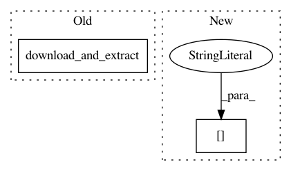

6b54518a2ac10bb99fd95b63d73758f1d0927e82,tensorflow_datasets/text/quac/quac.py,Quac,_split_generators,#Quac#Any#,90
Before Change
def _split_generators(self, dl_manager):
Returns SplitGenerator.
train_dir = dl_manager.download_and_extract(
os.path.join(_DATA_URL, "train_v0.2.json"))
val_dir = dl_manager.download_and_extract(
os.path.join(_DATA_URL, "val_v0.2.json"))
return {
After Change
return {
"train": self._generate_examples(expected_paths["train"]),
"validation": self._generate_examples(expected_paths["val"])
}
def _generate_examples(self, filepath):
In pattern: SUPERPATTERN
Frequency: 3
Non-data size: 2
Instances
Project Name: tensorflow/datasets
Commit Name: 6b54518a2ac10bb99fd95b63d73758f1d0927e82
Time: 2020-11-10
Author: no-reply@google.com
File Name: tensorflow_datasets/text/quac/quac.py
Class Name: Quac
Method Name: _split_generators
Project Name: kk7nc/RMDL
Commit Name: bb50a8a14130c1dc9cdd9db31c3cd4dcc97b9c5e
Time: 2018-03-22
Author: kk7nc@virginia.edu
File Name: Examples/WOS-5736.py
Class Name:
Method Name:
Project Name: tensorflow/datasets
Commit Name: c28a63fa9d9fb9ba3cced7052ea243e8884f9bf1
Time: 2019-11-21
Author: supertux90@googlemail.com
File Name: tensorflow_datasets/image/deep_weeds.py
Class Name: DeepWeeds
Method Name: _split_generators